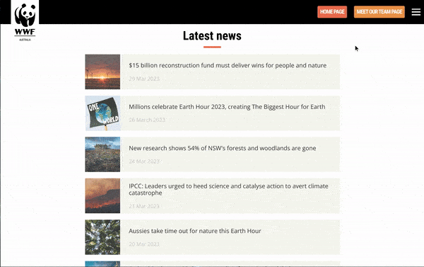

Sitio web mini de WWF
Resumen
Un amigo que actualmente vive en Australia y está cursando una Master relacionada con la programaciónme me sugerió este proyecto de su curso. Me lo envió como una forma de practicar y poner a prueba mis habilidades actuales como desarrollador frontend, tal como lo hizo a él.
El objetivo del proyecto era crear tres páginas web interconectadas que imitaran las de un sitio web real de una organización benéfica (una página de inicio más dos páginas adicionales), con un fuerte énfasis en el uso y gestión efectiva de imágenes. Para no complicar demasiado las cosas, construí el mismo sitio web de WWF Australia que hizo mi amigo - ten en cuenta que han modificado el diseño del sitio web desde que hice este proyecto.
Este proyecto fue la primera vez que intenté construir a un nivel tan alto en múltiples páginas, y fue una buena prueba de todos los conocimientos que había adquirido como desarrollador frontend hasta ese momento. Antes de comenzar este proyecto, aún tenía dudas sobre mis habilidades, así que decidí no fijar el listón demasiado alto y simplemente me enfoqué en tratar de crear páginas web que se parecieran a las originales en apariencia y sensación. Por lo tanto, no me enfoqué demasiado en el contenido real de las páginas web en este proyecto. Noté una mejora continua y una mayor comodidad a medida que avanzaba en las páginas y, una vez terminado, quedé satisfecho con los resultados finales.
- HTML5
- CSS
- Diseño Web Reactivo
- Javascript
Página de Inicio

Página de las noticias

Página de conocer al equipo

Construir el proyecto üõ†Ô∏è
La parte más difícil de este proyecto fue probablemente la página de inicio. No solo porque fue la primera página que construí y, por lo tanto, me sentía menos seguro que cuando construí la segunda y tercera página, sino también por la cantidad de imágenes en ella y por las diferentes características interesantes incluidas en ella.
Por ejemplo, en esta página podemos ver la primera barra de navegación 'sticky' que he construido y el primer carrusel de imágenes que he construido. También construí un menú hamburguesa para tamaños de pantalla más pequeños con un menú atractivo que aparece y cubre toda la página al hacer clic, y finalmente construí dos rejillas de imágenes utilizando CSS Grid con un borde naranja adicional que aparece al pasar el cursor sobre ellas.
Navegación 'sticky', carrusel de imágenes, menú hamburguesa

Grids de imágenes

Las otras dos páginas me costaron menos una vez que tenía la primera construida. Además, la sección inferior de las 3 páginas es prácticamente idéntica, y las 2 páginas adicionales se parecen mucho en diseño, lo que me ahorró tener que escribir mucho código CSS nuevo.
Sin embargo, ambas páginas presentaron sus propios desafíos. Para la página de noticias, el desafío fue crear correctamente las pequeñas tarjetas de noticias con efectos adicionales al pasar el cursor. Para la tarjeta, descubrí que era mejor crear un contenedor de flexbox con dos divs dentro. El primer div tendría una imagen de fondo a la que luego se le aplicarían propiedades de fondo para asegurarse de que la imagen tuviera una escala y proporción adecuadas al tamaño de la caja. También le di un ancho fijo y al otro div le di una flex-basis de 1 para que la parte de texto ocupara el espacio restante de la tarjeta.
Para lograr el efecto en el que la imagen parecía volverse más saturada al pasar el cursor, probé una idea en la que un pseudo-elemento ::after ligeramente opaco de color blanco en la tarjeta desaparecería al pasar el cursor, dando la apariencia de que la imagen se volvía más saturada. ¡Funcionó!
Efecto de hover en las tarjetas de noticias
En la página de "Conoce al equipo", el principal desafío fue crear una pequeña galería de imágenes de personas que tuviera el efecto de agrandar cada imagen al pasar el cursor sobre ella y cambiar el color del nombre de naranja a negro. Al principio, no estaba seguro de si usar CSS Flexbox o Grid para esta tarea, pero finalmente pensé que Grid funcionaría mejor ya que el diseño era bastante formulado. Sin embargo, luego tuve dificultades para hacer que las imágenes se escalen correctamente con el tamaño de la ventana. Después de revisar mis notas, encontré el valor "repeat(auto-fit, minmax(A, B))" para la propiedad grid-template-columns y luego probé usar minmax(A, B) para la propiedad grid-template-rows. ¡Y para mi emoción, funcionó!
Finalmente, se trataba de lograr que el texto cambiara de color cuando el usuario pasara el cursor solo sobre la imagen. Después de pensarlo y jugar un poco, finalmente me di cuenta de que si envolvía la imagen en un div, establecía el color del texto de ese div en naranja de forma predeterminada, pero en negro al pasar el cursor sobre él, cuando el usuario pasara el cursor sobre la imagen, esto también desencadenaría el cambio de color del texto para el div en el que estaba contenido. Son momentos como estos los que me han ayudado a comprender realmente la relación entre los elementos HTML y cómo funciona la "cascada" de CSS.
El diseño y los efectos de la galeráa de imágenes

Reflexi√≥n sobre el proyecto ü§î
Sin duda, fortalecí mis habilidades de desarrollo frontend con este proyecto, especialmente en cuanto a CSS y diseño web responsive. Fue muy útil poner en práctica de manera más seria lo que había aprendido sobre CSS hasta ese momento, o darme cuenta de las brechas en mi conocimiento. En general, este proyecto me hizo darme cuenta de que sí puedo construir sitios web de alta calidad, ¡y eso me hizo sentir bien!
También incursioné con Javascript en este proyecto. Aunque no es mucho (el menú desplegable y los carruseles de imágenes), y necesité ayuda para construirlos, en ese momento estaba dando mis primeros pasos con Javascript después de haberlo estudiado durante un tiempo, y fue bueno practicar con él.
Lo que encontré un poco extraño sobre los requisitos del proyecto fue la necesidad de usar media queries de HTML dentro de la etiqueta <head> en lugar de media queries de CSS como había visto en línea. Aunque fue bueno aprender y usar este otro método de creación de sitios web responsivos, pronto descubrí que no me gustaba porque requería varios archivos CSS individuales. Esto resultó en una gran duplicación de código, mucha adición y eliminación manual de código CSS, y a menudo me dejaba confundido al tratar de gestionar mucho código similar en tres documentos.